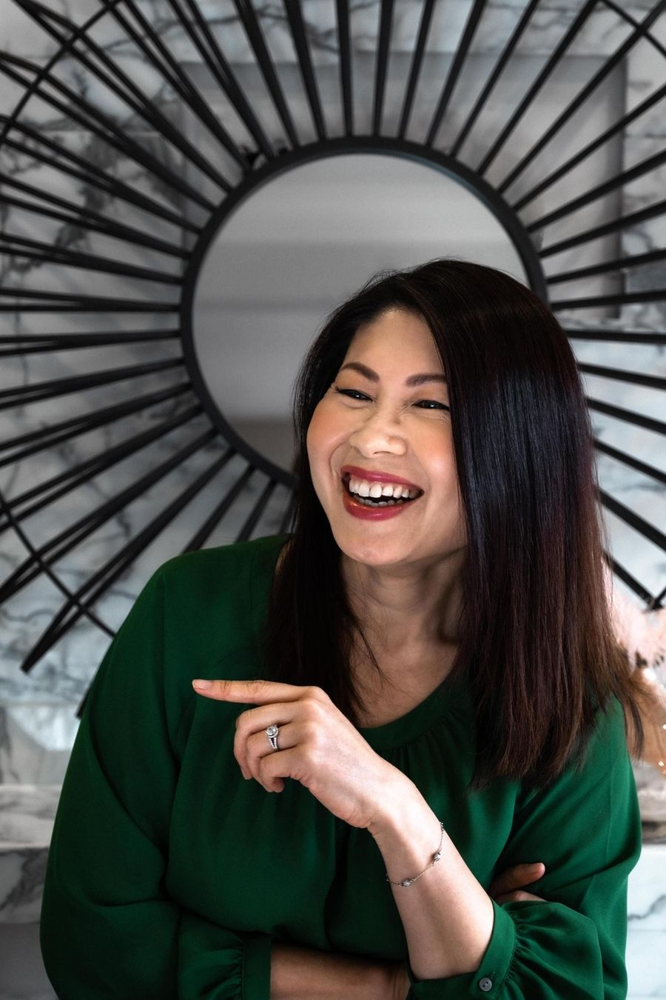
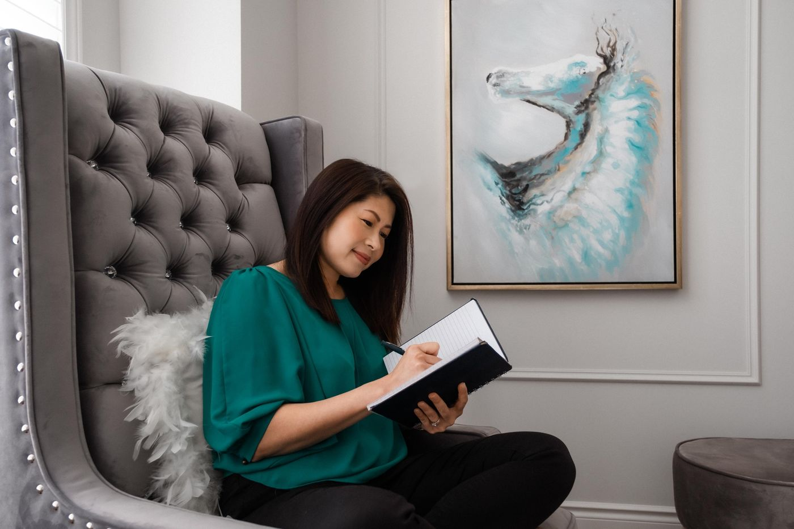
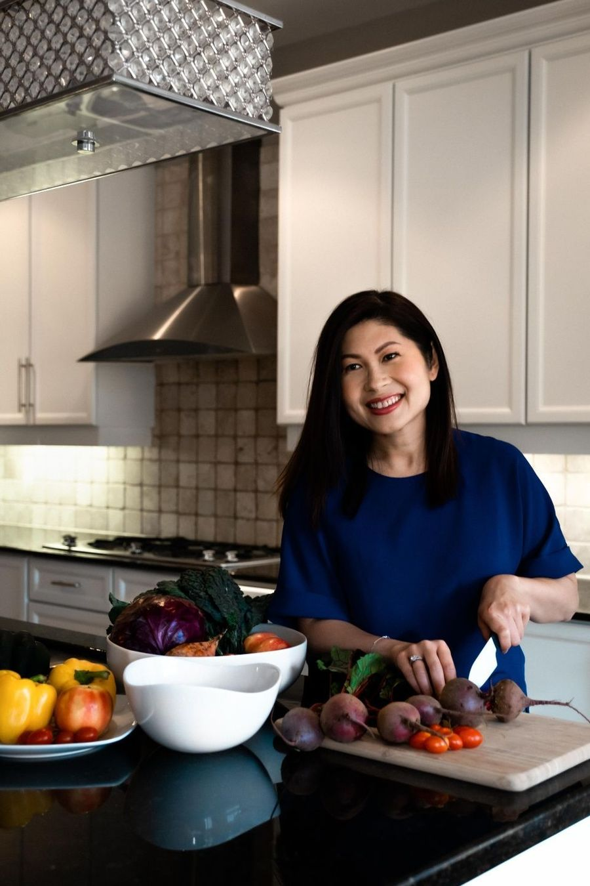

Simply Wellness Club有營同學會
Year-round coaching and a Cantonese-speaking community, with a live Q&A every month.
全年健康指導及粵語互動社群，每月設有直播問答。
$68 a month, or $680 a year每月，或每年 $680
See the Club了解同學會Menopause, blood sugar, cholesterol and healthy aging, explained in Cantonese by a former registered dietitian and Certified Diabetes Educator who is going through menopause herself.
由前註冊營養師及認證糖尿病教育師，用廣東話為你講解更年期、血糖、膽固醇與健康老化。她自己亦正經歷更年期的轉變。
As heard on CBC Morning, AM1430 and A1 Radio · Seen on OMNI and Fairchild TV · In the Toronto Star, Sing Tao and Ming Pao
電台 CBC 晨間廣播、AM1430、A1 中文電台 · 電視 OMNI、新時代電視 · 報章《多倫多星報》、《星島日報》、《明報》

Start with a short reset, go deeper with a signature program, or stay on track all year in the Club.
由短期重啟開始，參加深入的主打課程，或在同學會全年保持健康習慣。
Year-round coaching and a Cantonese-speaking community, with a live Q&A every month.
全年健康指導及粵語互動社群，每月設有直播問答。
$68 a month, or $680 a year每月，或每年 $680
See the Club了解同學會The 8-week Menopause Blood Sugar Blueprint and the 6-week B.O.N.E.S. bone health program, each built with a clinical partner.
8週「更年期血糖平衡藍圖」及6週「B.O.N.E.S 骨骼健康計劃」，均與專業醫療夥伴共同設計。
10, 14 and 21-day resets for getting back on track after holidays, travel or a stressful stretch.
10天、14天及21天重啟計劃，助你在節日、旅行或壓力過後重回正軌。

You can look up almost any health question in seconds now, including with AI. The hard part is knowing which answer fits your body, your blood test and your family's cooking, and then sticking with it.
今時今日，幾乎任何健康問題都可以在幾秒內查到，包括問 AI。難的是知道哪個答案適合你的身體、你的驗血報告和你家的飲食，然後堅持下去。
Your recipes were so flexible and easy to follow, I was able to complete the program without added stress… I don't feel lonely any more.
After one week I feel my body is healthy and not tired without coffee. My kids love the food that I cook with Sosan sources.
Sosan is great coach and a really good teacher.
My grandmother's battle with diabetes and its heartbreaking outcome sparked my passion for health. After two decades in private practice, I moved online to reach more women without giving up time with my own family. I believe investing in your health is as important as planning your financial future.
我祖母與糖尿病抗爭的經歷及其悲劇結局，點燃了我對健康的熱情。經營私人診所二十年後，我轉向網上平台，在不犧牲家庭生活的情況下幫助更多女性。我相信，投資健康就如同為財富未來做規劃一樣重要。

Join our wellness family for clear, easy-to-understand advice for women navigating menopause, plus first word when programs open.
加入我們的健康家庭，收取專為更年期女性而設、易懂的健康資訊，並率先知道課程何時開放報名。
Or listen to the Simply Sosan Podcast in English and Cantonese, and watch on YouTube.
亦可收聽粵英雙語的 Simply Sosan Podcast，或在 YouTube 觀看。